Le realtà che oggi fanno parte della community TNV, dalla startup all’impresa strutturata.
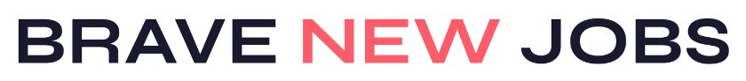
Brave New Jobs
ATS nativo per agenti AI.
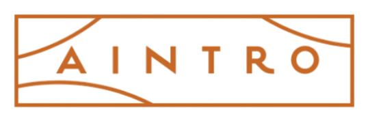
Aintro
Componenti innovativi per biciclette e mezzi a due ruote.
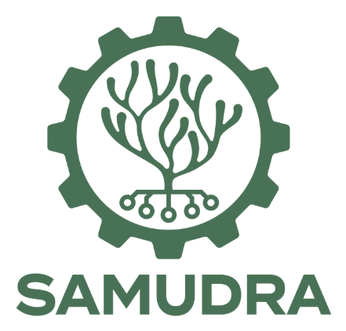
Samudra
Robotica marina, blue economy.
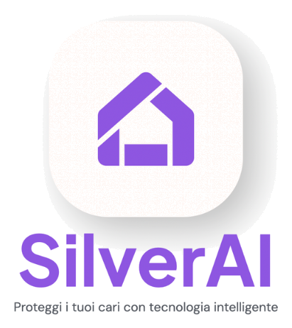
Silver AI
Sicurezza e benessere quotidiano per gli anziani in casa.
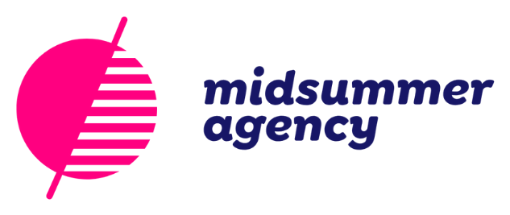
Midsummer Agency
Performance marketing per brand internazionali.
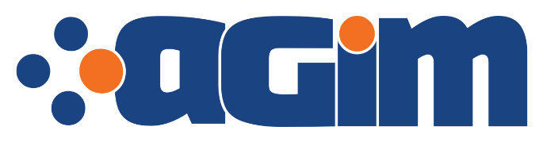
Agim Gestionale Immobiliare
Software gestionale per il settore immobiliare.
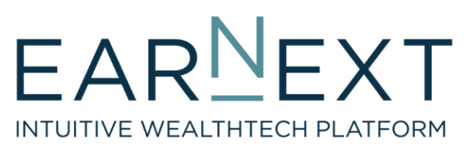
Earnext
Wealth plan per commercialisti e consulenti finanziari.
Studio Legale Simbula
Societario e industriale sull’innovazione.
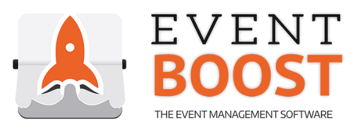
Eventboost
Software per eventi, scala globale.
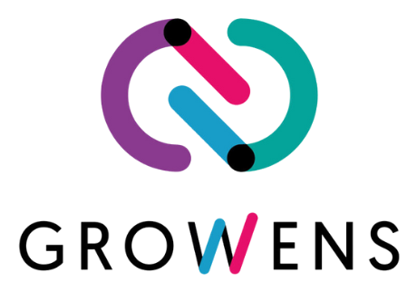
Growens
Predictive marketing, messaging, content.
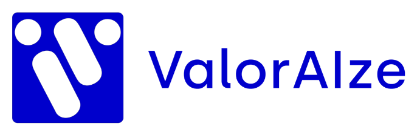
ValorAIze
Tech transfer e IP, AI-native.
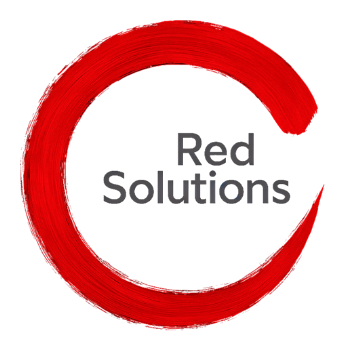
Red Solutions
Soluzioni tecnologiche su misura, ricerca e sviluppo continuo.
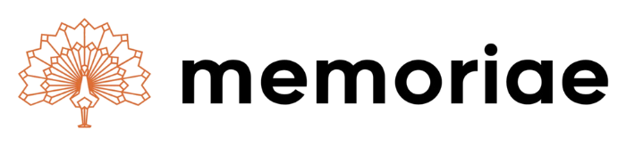
Memoriae
Automatizza la burocrazia del lutto per le famiglie.
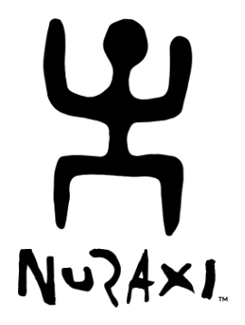
Nuraxi
Longevità SaaS. Sardegna e Arabia Saudita.
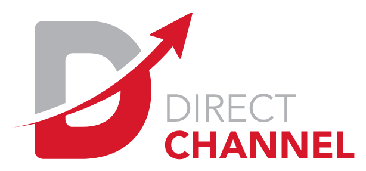
Direct Channel
Gestione di abbonamenti cartacei e digitali.
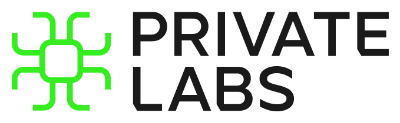
Private Labs
Soluzioni per fondi di investimento privati.
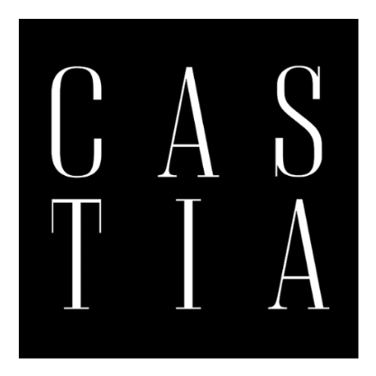
Castia Art
Associazione e centro di produzione artistica.
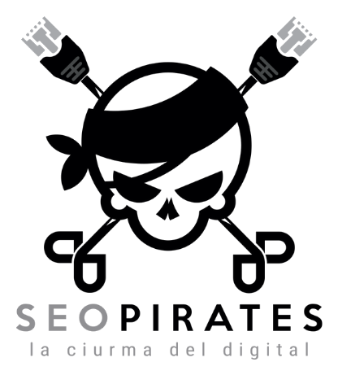
SEO Pirates
Digital marketing per PMI e business locali.
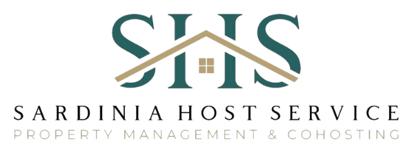
Sardinia Host Service
Gestione di affitti brevi extra-alberghieri.
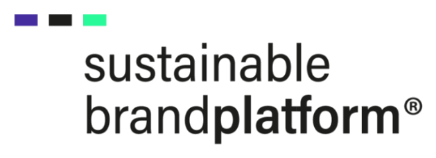
Sustainable Brand Platform
KPI di sostenibilità per l’industria della moda.
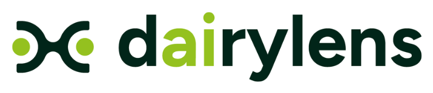
Dairy Lens
Filiera lattiero-casearia, predizione.
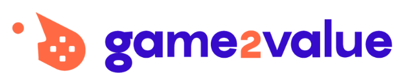
Game2Value
HR tech, dati oggettivi sul potenziale umano.
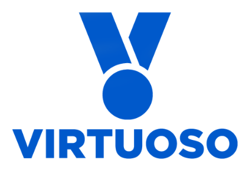
Virtuoso
App che premia uno stile di vita sano.
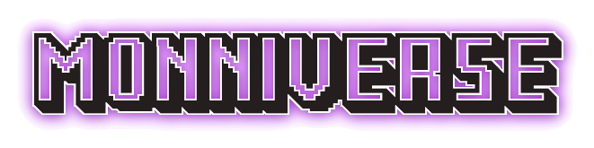
Monniverse
Community per rendere l’animazione accessibile a tutti.
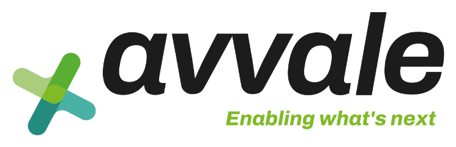
Avvale
Trasformazione digitale, scala globale.
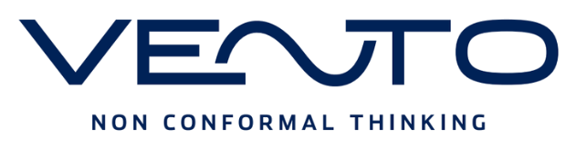
Vento
Software di wind engineering per l’ingegneria.
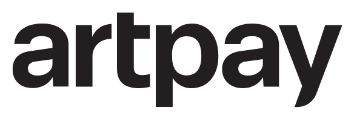
ArtPay
Fintech per gallerie d’arte e case d’asta.
Bloomlabs
Indoor farm di fiori. Incubatore → grant → round.
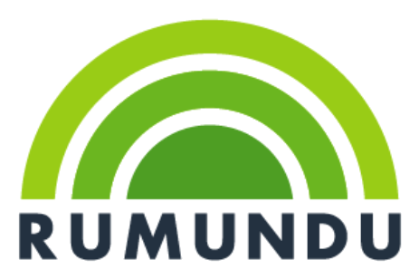
Rumundu
Network Sardegna–Sud Africa, Social Innovation School.
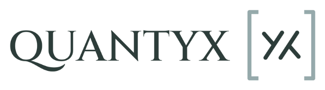
Quantyx
Risk e reporting per alternative investment.